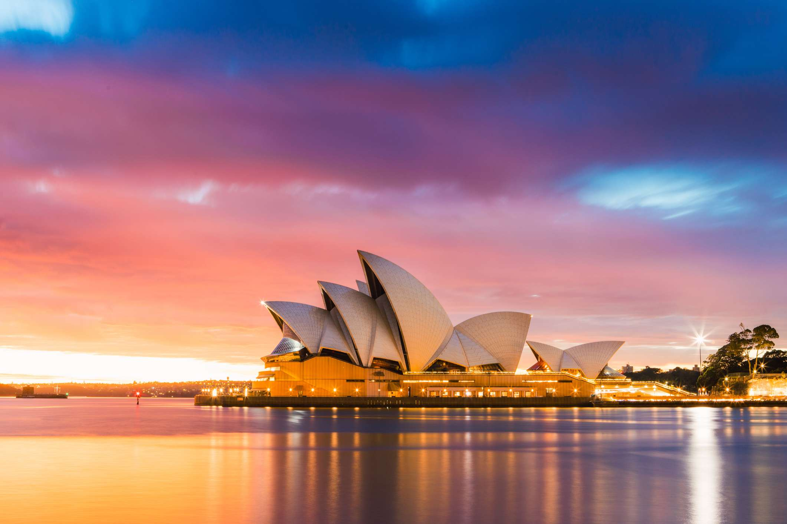
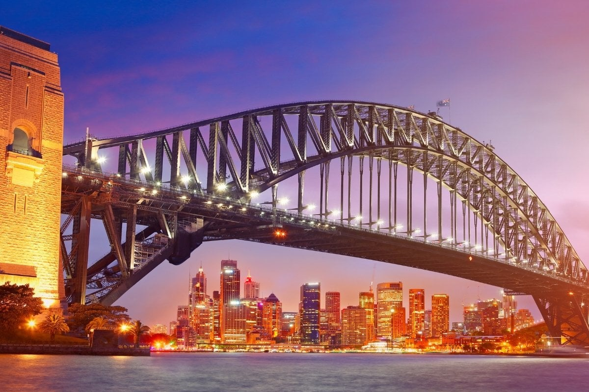
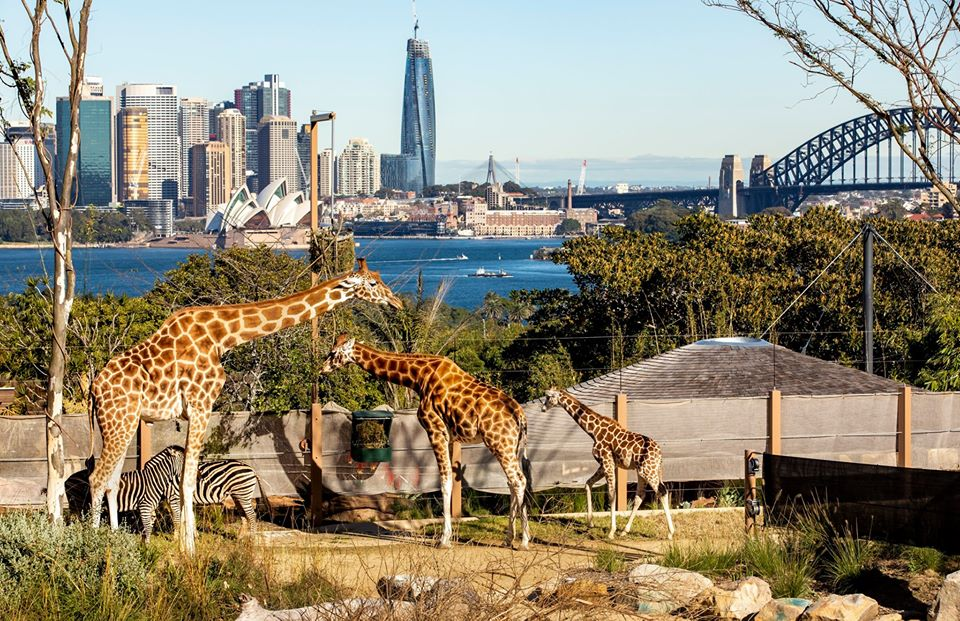
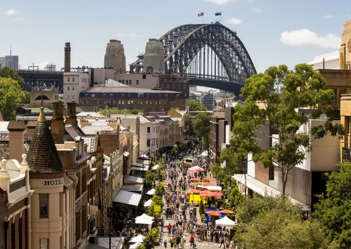
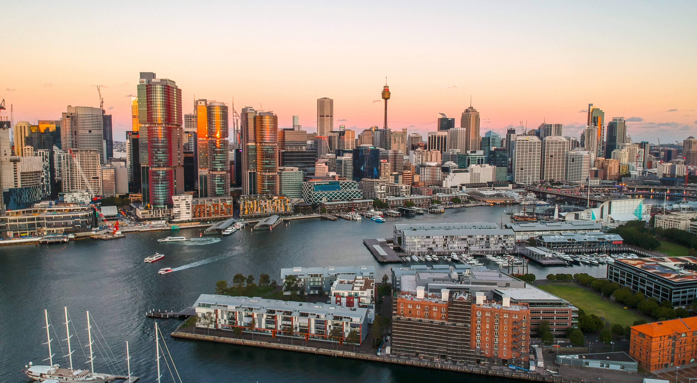

Attractions in Sydney
Sydney Opera House

The Sydney Opera House is a multi-venue performing arts center. It is one of the 20th century's most famous and distinctive buildings. You can take a guided tour of the Opera House and also attend a variety of performances.
Sydney Harbour Bridge

The Sydney Harbour Bridge is a steel through arch bridge across Sydney Harbour that carries rail, vehicular, bicycle, and pedestrian traffic between the Sydney central business district and the North Shore. You can take a guided climb to the top of the bridge for breathtaking views of the city.
Taronga Zoo

Taronga Zoo is a zoo in Sydney. It is located on the shores of Sydney Harbour in the suburb of Mosman. It features a wide variety of Australian and international animal species. You can also take a guided tour and learn more about the animals and their habitats.
The Rocks

The Rocks is a historic area of Sydney's city center, located on the southern shore of Sydney Harbour. It features historic buildings, cobblestone streets, and a variety of shops, restaurants, and bars. You can take a guided walking tour to learn more about the history of the area.
Darling Harbour

Darling Harbour is a large recreational and pedestrian precinct located on the western outskirts of the Sydney central business district. It features a variety of attractions, including the SEA LIFE Sydney Aquarium, the Australian National Maritime Museum, and the Chinese Garden of Friendship.